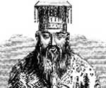

Antik Çin filozofu Konfüçyus (MÖ 551-479) tarihin en etkili kitaplarından biri olan Seçmeler’in yazarıdır. Adını taşıyan bir ahlak sistemi kurmuştur. Asya kültürü ve toplum hayatı üzerindeki büyük etkisine rağmen hayatı hakkında pek az şey bilinmektedir.

Efsaneye göre Konfüçyus, günümüz Doğu Çin’inde yoksul ama saygın bir ailenin çocuğu olarak dünyaya geldi. Doğduğu yerde o dönem Lu Krallığı hüküm sürüyordu. Bir süre muhasebeci, çoban ve öğretmen olarak çalıştıktan sonra yerel egemenin yanında memur oldu. Başarılı bir danışman olmasına rağmen otuz yıl sonra politik nedenlerle bu işi bıraktı. Belki de patronunun hedonistik yaşam tarzı onu rahatsız etmişti.
Sarayda yaşadığı deneyimler ona iyi bir idarenin nasıl olması gerektiği hakkında fikir verdi. Çin tarihinin o döneminde bu mesele çok yaygın bir tartışma konusuydu. İlkbahar ve Sonbahar Dönemi (MÖ 722-481) olarak anılan bu zaman aralığında ülkede sözde imparator hakimiyeti olmasına rağmen, gerçekte yarı-bağımsız feodal kralların sözü geçiyordu.
Konfüçyus ahlak, görev duygusu, derin düşünme ve eğitim gibi konuların önemine vurgu yaptı. Konfüçyus’a göre bir idarenin meşruluğu onun başında bulunan kişiye, bir toplumun sağlığı ise onu oluşturan insanlara bağlıydı. İşini bıraktıktan sonra on yıl boyunca ahlaki ve felsefi düşüncelerini yaymak için Çin’i dolaştı.
Seçmeler ölümünün ardından taraftarları tarafından derlenmiştir. Bu kitapta yer alan bilgiler Konfüçyusçuluğun temellerini oluşturur. Kitapta hiçbir anlatım bulunmamakta, kitap yazarının ahlaki anlayışını göstermeyi amaçlayan kısa hikaye ve aforizmalardan oluşmaktadır. Bir yerde politika ile ilgili olarak şunlar söylenmektedir: “Efendi der ki Erdemle hükmeden kişi kutup yıldızına benzer. Yerini her zaman korur ve tüm diğer yıldızlar ona dönerler.”
Bu benzetme Konfüçyus düşüncesinde erdemli yöneticinin önemine vurgu yapar. Konfüçyus’a göre bir yönetici tüm toplum için ahlaki bir örnektir. Konfüçyus’un kutsiyet iddiası olmamasına ve Konfüçyusçuluğun bir din olmamasına rağmen 72 yaşında öldükten sonrada yazdıkları büyük bir yaygınlık kazanmış ve Çin toplumunun ahlaki temellerini teşkil etmiştir.
Ek Bilgiler
1- Konfüçyus ellili yaşlarının sonunda bir suikast girişiminden sağ olarak kurtulmayı başarmıştır. Daha sonraları suikastçisinin kardeşini, öğrencisi olarak kabul etmiştir.
2- Seçmeler’e ek olarak Konfüçyus bir şiir kitabı da yazmıştır. Ayrıca Lu Krallığı vakayinamesi olan İlkbahar ve Sonbahar Kayıtları da onun elinden çıkmıştır.
3- 1966-1976 yılları arasında yaşanan Çin Kültür Devrimi sırasında, komünist lider Mao Zedung (1893-1976) Konfüçyus’u “berbat bir gerici” olarak tanımlamış ve Konfüçyusçuluğa Çin toplumunun gelişimini engelleyen gerici düşünceler yığını olarak saldırmıştır. Mao’nun kızıl muhafızları Konfüçyus’un doğduğu yerdeki bir tapınağa saldırı düzenlemişlerdir. Mao’nun ölümünden sonra Çin liderleri, Konfüçyusçuluğun itibarını iade etmişlerdir.